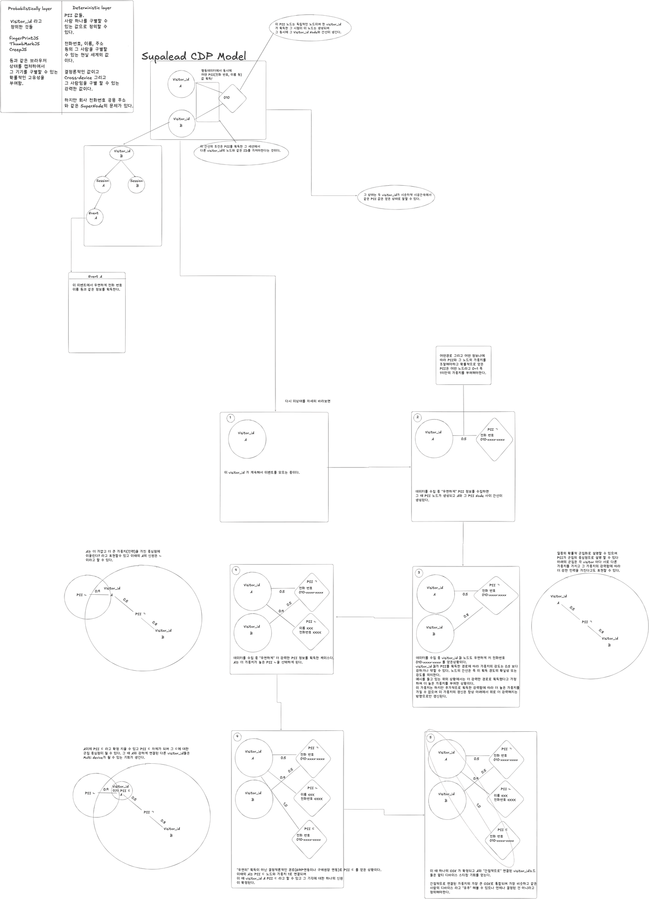
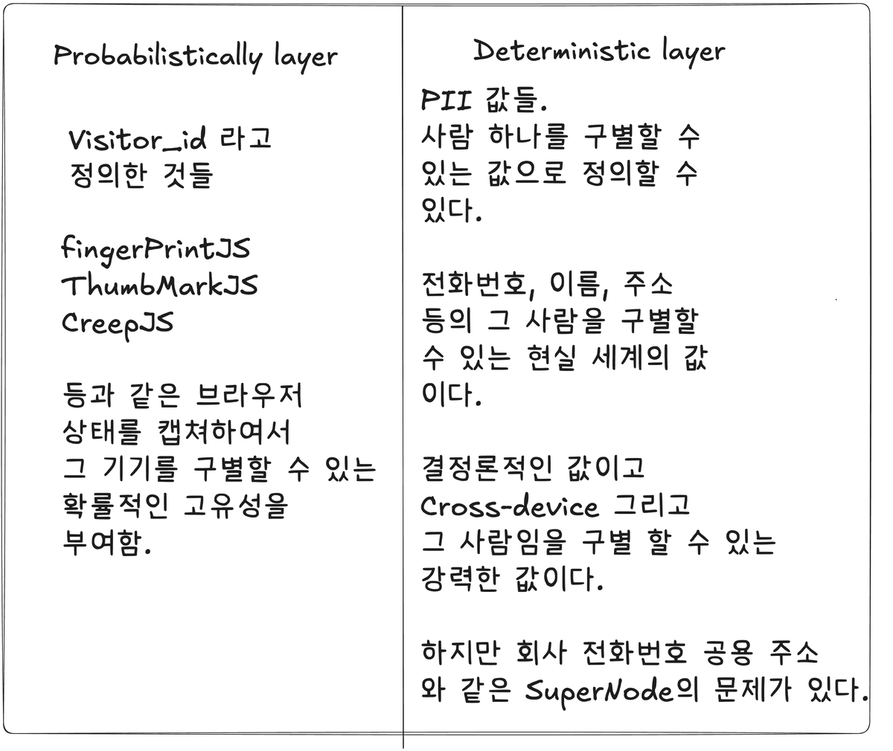
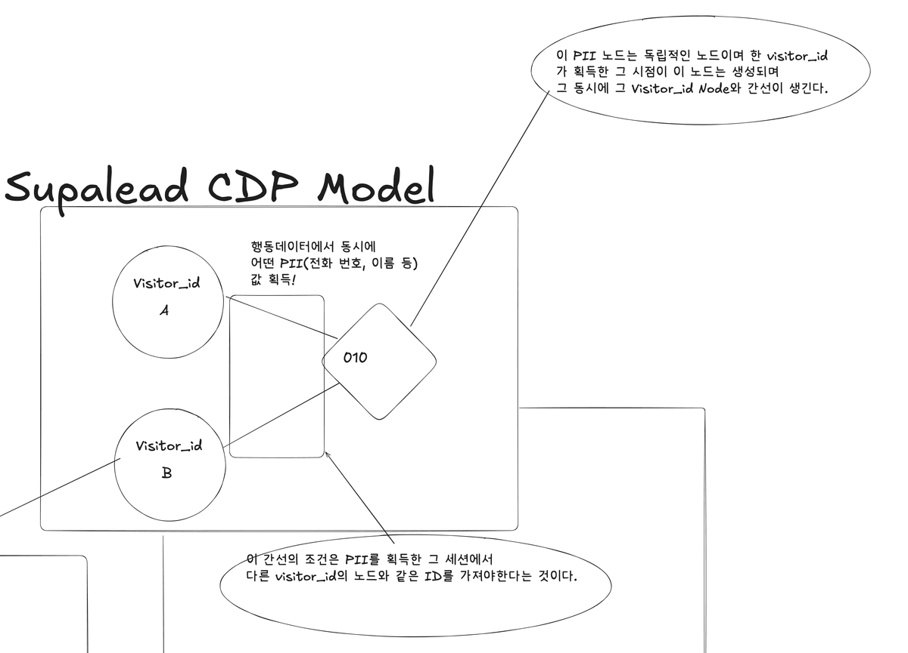
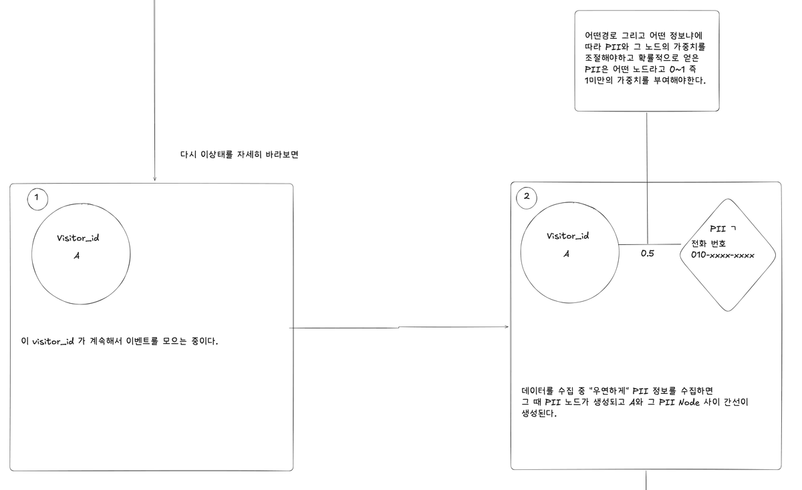
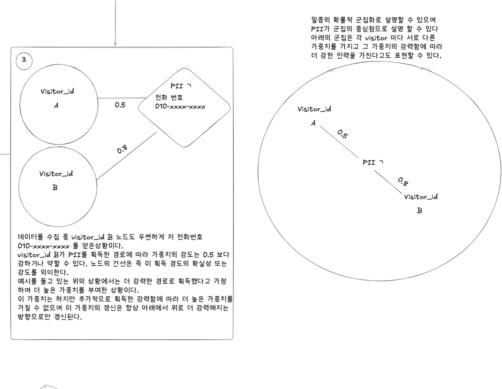
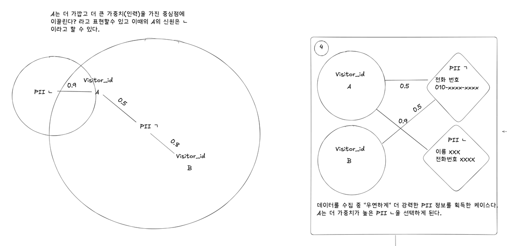
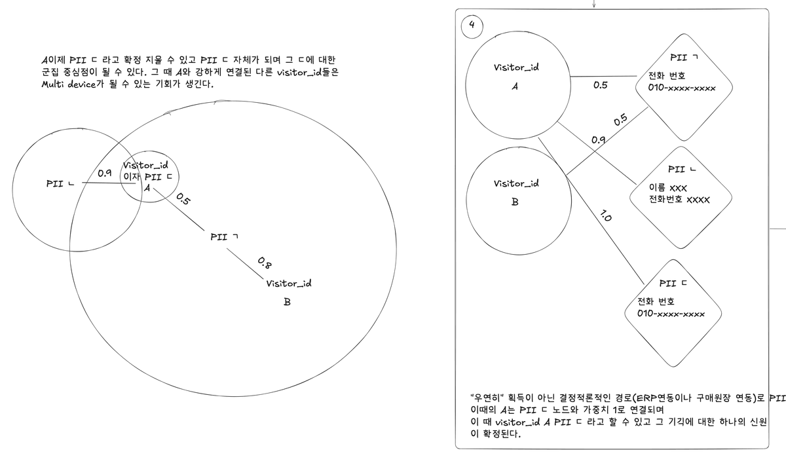
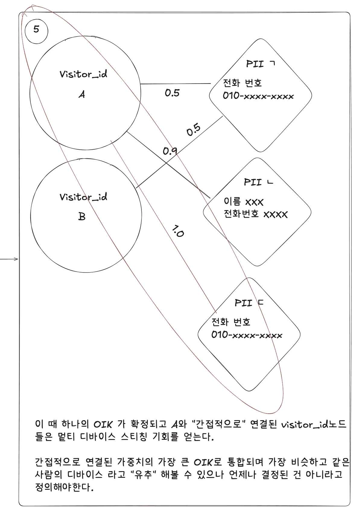

01상황과 역할
수파리드는 광고 클릭부터 자사몰, 매장, 외부몰 구매까지 고객 여정을 하나의 어트리뷰션으로 잇는 옴니채널 고객 인텔리전스 플랫폼입니다. 이 프로젝트는 그 기반인 단일 고객 프로필(Single Customer View)을 만드는 신원 모델을 다룹니다. B2B 서비스처럼 구매까지 몇 주가 걸리는 업종이 있습니다. 이런 업종의 방문자는 광고로 들어와 여러 번 다시 오고, 탭을 여러 개 열고, 마지막에 문의를 남깁니다. 이 흐름을 광고부터 문의까지 이어 보여 주려면 먼저 "이 이벤트는 누구의 것인가"를 정해야 했습니다.
기존 방식은 핑거프린트 값을 그대로 방문자 ID로 썼습니다. 광고 차단기가 핑거프린트 스크립트를 막으면 그 브라우저는 식별에서 통째로 빠졌습니다.
세션도 자주 끊겼습니다. 처음에는 30분 동안 활동이 없으면 세션을 끝내는 inactivity timeout 방식이었습니다. 광고로 들어왔다가 점심을 먹고 돌아온 사람은 광고 없이 바로 들어온 새 방문, 즉 직접 유입으로 잡혔습니다. 그래서 탭이 열려 있는 동안만 유지되는 세션(탭 세션)으로 바꿨습니다. 그러자 이번에는 탭마다 세션이 따로 생겼습니다. 탭 세션 수명의 중앙값은 3분이 채 되지 않았습니다.
- 맡은 일
- 이벤트, 세션, 방문자의 의미를 정하고, 그 정의에 맞춰 브라우저 SDK의 세션, ClickHouse 저장 구조, 신원 계산 배치를 설계하고 구현했습니다.
02처음 그린 모델에서 확정까지
2026년 8월 말, "이 이벤트는 누구의 것인가"를 어떻게 볼지 처음으로 그림으로 정리했습니다. 아래는 그때 Excalidraw로 직접 그린 초안입니다. 이 초안을 출발점으로 운영 데이터와 하나씩 맞춰 보며, 맞는 생각은 남기고 틀린 생각은 고쳐 지금의 다섯 층 모델로 확정했습니다.

초안 읽기
초안이 말하는 내용을 순서대로 풀면 다음과 같습니다. 그림 속 "visitor_id"는 브라우저를 가리키는 값, "PII"는 전화번호나 이름처럼 현실의 사람을 가리키는 개인정보입니다.
-

초안 일부 확대 신원을 두 층으로 나누기
왼쪽은 확률 층(probabilistic layer)입니다. FingerprintJS, ThumbmarkJS, CreepJS 같은 도구는 브라우저의 상태를 읽어 기기마다 다른 값을 만듭니다. 이 값으로 "아마 같은 기기"라고는 말할 수 있지만 확실하지는 않습니다. 초안에서는 이 값을 visitor_id라고 불렀습니다.
오른쪽은 결정 층(deterministic layer)입니다. 전화번호, 이름, 주소는 기기가 달라도 같은 사람을 가리키는 강한 값입니다. 다만 회사 대표번호나 공용 주소처럼 여러 사람이 함께 쓰는 값이 있습니다. 이런 값에는 너무 많은 방문자가 몰립니다. 초안에는 이것을 SuperNode 문제라고 적어 두었습니다.
-

초안 일부 확대 같은 개인정보를 얻으면 edge로 잇기
초안은 방문자 아래에 세션이, 세션 아래에 이벤트가 달리는 tree로 봤습니다. 방문자 A의 어떤 이벤트에서 전화번호를 얻으면, 그 순간 전화번호를 나타내는 node가 하나 생기고 A와 edge로 이어집니다.
나중에 방문자 B에서도 같은 번호를 얻으면 B도 같은 node에 이어집니다. 두 방문자가 시간 차를 두고 같은 개인정보를 남긴 상태를 그래프로 표현한 것입니다.
-

초안 일부 확대 edge마다 확실한 정도를 가중치로 달기
모든 edge가 같은 무게는 아닙니다. 어떤 경로로 어떤 정보를 얻었는지에 따라 edge에 0과 1 사이의 가중치를 달았습니다. 행동 데이터에서 우연히 얻은 값은 1보다 작게 둡니다.
같은 값을 더 확실한 경로로 다시 얻으면 가중치를 올립니다. 가중치는 올라가기만 하고 내려가지 않게 했습니다.
-

초안 일부 확대 가중치를 끌어당기는 힘으로 보기
이 그래프를 확률적인 cluster로 설명했습니다. PII node가 cluster의 중심이고, 가중치는 방문자를 끌어당기는 힘입니다.
그림에서 B는 더 확실한 경로로 같은 번호를 얻어서 0.8로 이어졌습니다. 같은 중심에 붙어 있어도 방문자마다 끌리는 힘이 다릅니다.
-

초안 일부 확대 더 강한 중심을 고르기
방문자 A가 이름과 전화번호를 함께 담은 더 강한 정보 ㄴ을 얻었습니다. 이제 A는 0.5로 이어진 ㄱ보다 0.9로 이어진 ㄴ에 더 강하게 끌립니다.
그래서 A의 신원은 ㄴ으로 봅니다.
-

초안 일부 확대 결정 경로로 얻으면 확정하기
ERP나 구매 기록을 모아 둔 ledger를 연동해 얻은 것처럼, 우연이 아닌 경로로 개인정보를 얻으면 가중치 1로 잇습니다. 이때 그 기기의 신원은 하나로 확정됩니다.
이렇게 확정된 A에 강하게 이어진 다른 visitor_id들은 같은 사람의 다른 기기일 가능성이 생깁니다.
-

초안 일부 확대 사람 단위 키와 간접 연결의 단서
신원이 확정되면 사람 단위 키가 하나 정해집니다. 초안에서는 이것을 OIK라고 불렀습니다. A와 간접적으로 이어진 방문자들은 여러 기기를 하나로 잇는 후보가 됩니다.
초안 맨 아래에는 단서를 하나 달았습니다. 간접적으로 이어진 기기는 같은 사람이라고 "유추"할 수 있을 뿐, 확정된 것은 아니라고 정의해야 한다는 것입니다. 이 문장은 최종 모델에서 가장 중요한 규칙이 됐습니다.
운영 데이터로 확인하고 바꾼 것
두 층을 나눈다는 큰 방향은 맞았습니다. 그런데 초안을 그대로 운영 데이터에 적용해 보니 쓸 수 없는 곳이 있었습니다. 고칠 때 기준은 하나였습니다. 틀렸을 때 되돌릴 수 있는가입니다.
| 주제 | 초안 | 확정 |
|---|---|---|
| 방문자를 가리키는 값 | 핑거프린트 값을 그대로 방문자 ID(visitor_id)로 썼습니다. | SDK가 발급해 브라우저에 둔 공유 세션 ID를 기준으로 삼습니다. 핑거프린트는 ID가 아니라, 끊긴 세션을 잇는 증거로만 씁니다. |
| 무엇이 root인가 | 방문자 아래에 세션이, 세션 아래에 이벤트가 달리는 tree 하나로 봤습니다. | 세션, 브라우저 묶음, 방문자, 사람을 서로 다른 층으로 나눴습니다. 층마다 쓸 수 있는 근거가 다릅니다. |
| 가중치 | edge마다 가중치를 저장하고, 값이 올라가기만 하도록 갱신했습니다. | 가중치는 저장하지 않습니다. 근거만 쌓아 두고, 조회할 때 그 근거를 보고 등급을 계산합니다. |
| 간접 연결 | 가중치를 끌어당기는 힘으로 보고, 그 힘을 따라 cluster를 넓게 이었습니다. | 핑거프린트로는 1-hop만 잇습니다. 각 핑거프린트를 중심 하나에만 붙여, 연결이 star topology를 넘어 퍼지지 않게 했습니다. |
| PII node | 전화번호 값 자체를 node로 두고, 같은 node에 이어진 방문자는 같은 사람으로 봤습니다. | 번호마다 서버가 난수 ID를 발급하고, 그 ID를 비교용 node로 씁니다. 번호가 같아도 같은 사람이라고 단정하지 않습니다. |
| 신원을 바꾸는 방법 | edge 가중치를 고쳐 결과에 바로 반영했습니다. | 원본은 그대로 두고 신원 결과를 새 버전으로 다시 계산합니다. 조회 화면이 읽을 버전을 가리키는 pointer 하나만 새 버전으로 옮겨 공개합니다. |
| 그대로 남은 생각 | 확률 층과 결정 층을 나눴고, 간접 연결은 유추일 뿐이라고 적었습니다. | 확률로 얻은 근거만으로는 사람을 만들 수 없다는 규칙으로 남았습니다. |
1. 핑거프린트를 ID에서 증거로 내렸습니다
2026년 6월, 핑거프린트를 받아 오던 프록시가 약 50시간 멈췄습니다. 그동안 모든 고객사에서 방문자를 하나도 식별하지 못했습니다. 장애가 없는 평소에도 사람이 방문한 세션의 약 18%는 핑거프린트를 한 번도 받지 못했습니다. 비슷한 분석 제품 10개를 살펴보니, 모두 SDK가 발급해 브라우저 저장소에 둔 난수를 정식 방문자 ID로 쓰고 있었습니다.
그래서 SDK가 발급한 공유 세션 ID를 기준 단위로 삼았습니다. 이벤트를 기록할 때, ID를 발급할 때, 데이터를 지울 때 모두 이 단위를 기준으로 합니다. 핑거프린트는 어느 층의 ID도 아니고, 끊긴 세션을 잇는 증거로만 씁니다.
2. tree 하나 대신 층을 나눴습니다
세션이 몇 분짜리였을 때는 핑거프린트가 여러 세션을 묶는 부모처럼 보였습니다. 세션을 탭과 시간으로 끊지 않는 공유 세션으로 바꾸자 핑거프린트가 하는 일은 세션 사이의 틈을 메우는 정도로 줄었습니다. 핑거프린트 하나에 세션이 둘 이상 붙는 비율이 26.6%에서 3.4%로 떨어졌습니다.
시간 순서로 보면 방문자가 세션들의 부모입니다. 저장소에 남은 기록으로 보면 세션이 root입니다. 두 관점이 모두 맞아서 하나를 고르지 않고 층을 나눴습니다. 층마다 쓸 수 있는 근거를 한 종류로 정했습니다. 세션은 저장소가 이어진다는 근거, 방문자는 기기가 비슷하다는 근거, 사람은 연락처나 주문 같은 확정된 근거입니다.
3. 가중치는 저장하지 않고 그때그때 계산합니다
올라가기만 하는 가중치는 틀렸을 때 되돌릴 수 없습니다. 왜 그 값이 되었는지 근거도 남지 않습니다. 실제로 신원 규칙은 10주 동안 다섯 번 바뀌었습니다. 근거만 쌓아 두고 조회할 때 등급을 계산하면, 규칙이 바뀌어도 과거 데이터에 그대로 적용됩니다.
4. cluster가 끝없이 커지지 않게 막았습니다
한 고객사의 30일 운영 데이터로 시뮬레이션해 보니, 연결을 transitive하게 끝까지 따라가면 핑거프린트 470개가 하나의 connected component로 묶였습니다. 테스트에 쓴 값과 운영용 단말이 그 component의 중심이었습니다. 초안이 걱정한 SuperNode 문제가 실제로 나타난 것입니다.
값 하나에 이어질 수 있는 핑거프린트 수에 상한을 두고, 핑거프린트로는 1-hop만 잇게 했습니다. A와 B, B와 C가 이어져도 A와 C는 잇지 않습니다. 각 핑거프린트는 중심 하나에만 붙기 때문에, 연결은 중심에서 한 겹만 뻗은 star topology가 됩니다. 이렇게 하자 가장 큰 connected component가 470개에서 7개로 줄었고, 그 대가로 원래 이어지던 연결의 2.8%를 잃었습니다.
5. 같은 번호를 같은 사람으로 단정하지 않습니다
국내 휴대전화 번호는 1억 개가 되지 않습니다. hash로 감춰도 가능한 번호를 모두 대입하는 brute force로 되돌릴 수 있습니다. 그래서 번호마다 서버가 난수 ID를 하나씩 발급해 비교용 node로 쓰고, 분석 저장소에는 번호 대신 그 ID만 남겼습니다.
가족이 번호를 함께 쓰거나, 배송 수령인 번호를 적거나, 안심번호를 쓰는 경우도 있었습니다. 값이 같다는 것과 사람이 같다는 것을 다른 층에 두었습니다. 그래야 잘못 합친 것을 되돌릴 수 있습니다. 한 방문자에 본인 연락처가 둘 이상 붙으면 여러 사람이 함께 쓰는 기기로 보고, 그 방문자는 어느 사람에게도 잇지 않습니다.
6. 바꿀 때는 다시 계산하고 pointer를 옮깁니다
확률로 묶은 결과는 틀릴 수 있습니다. 그래서 원본은 그대로 두고, 신원 결과를 처음부터 다시 계산해 새 버전으로 저장합니다. 그다음 조회 화면이 어느 버전을 읽을지 가리키는 pointer 하나만 새 버전으로 옮겨 공개합니다. 문제가 생기면 pointer를 직전 버전으로 rollback하면 됩니다. 관리자가 합치거나 나눈 판단도 하나의 기록으로 쌓고 다음 버전부터 반영합니다. 같은 입력이면 같은 결과가 나오는 deterministic한 계산을 지키기 위해서입니다.
확정한 모델
- 이벤트브라우저에서 일어난 일 하나를 기록한 것입니다. 이 원본 기록은 지우지 않습니다.
- 공유 세션SDK가 발급해 브라우저 저장소에 둔 ID입니다. 같은 브라우저의 모든 탭이 함께 씁니다. 이벤트를 기록하고 데이터를 지울 때 이 단위를 기준으로 합니다.
- 브라우저 묶음같은 브라우저에서 나왔다는 것이 확실한 세션들을 모은 단위입니다. 같은 공유 세션, 같은 탭에서 이어진 세션, 다른 도메인으로 넘어갈 때 서명된 1회용 토큰으로 이어 준 세션처럼 추측이 섞이지 않은 연결로만 묶습니다.
- 방문자브라우저 저장소가 지워져 끊긴 브라우저 묶음들을, 핑거프린트가 같을 때 1-hop만 이어 같은 방문자로 본 결과입니다.
- 사람문의 연락처, 주문, 로그인처럼 확정된 근거가 있을 때만 방문자를 사람에 붙입니다. 두 사람이 같은 방문자에 이어져 있다는 이유만으로 두 사람을 하나로 합치지는 않습니다.
초안에서 그대로 남은 생각은 두 가지입니다. 확률 근거와 확정 근거를 섞지 않는다는 것, 그리고 간접 연결은 유추일 뿐이라는 것입니다. 나머지는 운영 데이터가 보여 준 문제를 "되돌릴 수 있는가"라는 기준으로 고친 결과입니다.
03해결 과정
1. 신호가 끊기는 시점에 맞춰 층 나누기
신원은 작은 단위부터 이벤트, 공유 세션, 브라우저 묶음, 방문자, 사람의 다섯 층으로 나눴습니다. 공유 세션은 같은 고객사 사이트에서 같은 브라우저의 모든 탭이 함께 쓰는 세션입니다. 층을 나눈 기준은 식별 신호가 끊기는 시점입니다. 탭 세션은 탭을 닫으면 끝나고, 브라우저 저장소에 둔 ID는 Safari가 저장소를 지우면 끝납니다.
운영 데이터로 확인해 보니, iOS Safari에서 같은 핑거프린트로 돌아온 방문 중 브라우저 저장소가 비어 있던 비율은 3~7일 만에 온 경우 약 24%, 7~14일 만에 온 경우 약 49%였습니다. 데스크톱은 같은 구간에서 10% 안팎이었습니다. iOS Safari에서는 1~2주 만에 돌아온 방문의 절반 가까이를 브라우저에 둔 ID만으로는 알아볼 수 없었다는 뜻입니다. 그래서 층마다 연결에 쓸 수 있는 근거를 따로 정했습니다.
- 브라우저 묶음은 같은 브라우저에서 나온 것이 확실한 세션들을 모은 단위입니다. 같은 공유 세션, 같은 탭에서 30분 안에 이어진 세션, 다른 도메인으로 넘어갈 때 서명된 1회용 토큰으로 이어 준 세션만 근거로 씁니다.
- 핑거프린트는 ID로 쓰지 않습니다. 저장소가 지워져 끊긴 브라우저 묶음을 1-hop만 잇는 데 씁니다. A와 B, B와 C가 이어져도 A와 C는 잇지 않습니다. 테스트에 쓴 값처럼 지나치게 많은 핑거프린트와 이어진 값은 연결에 쓰지 않습니다. 각 핑거프린트는 중심 하나에만 붙여, 연결이 중심에서 한 겹만 뻗은 star topology가 되게 했습니다.
- 사람은 문의 연락처나 주문처럼 확정된 값이 있을 때만 붙입니다.
2. 세션과 유입 나누기
공유 세션은 탭을 새로 열거나 시간이 지나도 바꾸지 않습니다. 새 광고나 검색으로 들어오면 세션은 그대로 두고 유입만 하나 더 남깁니다.
SDK는 고객사별 세션을 IndexedDB에 저장합니다. 기존 세션을 찾는 일과, 없을 때 새 세션을 만드는 일을 readwrite transaction 하나로 묶었습니다. 이 transaction이 끝나기 전에는 다른 탭이 끼어들 수 없어서, 탭 여러 개가 동시에 열려도 세션은 하나만 생깁니다.
SDK는 세션을 시작하는 이벤트를 보낸 뒤에도 브라우저에 보관해 둡니다. Go로 만든 수집 서버(receiver)는 이벤트를 queue에 넣은 뒤, 실제로 넣은 세션 ID와 이벤트 ID의 쌍을 202 응답에 담아 돌려줍니다. SDK는 이 응답에서 자기 이벤트를 확인했을 때만 보관한 이벤트를 지웁니다. HTTP 응답이 성공으로 왔다는 것과 이벤트가 queue에 실제로 들어갔다는 것은 다른 일이기 때문입니다.
3. 같은 이벤트가 한 행으로 모이도록 키 바꾸기
원본 이벤트 테이블은 ClickHouse의 ReplacingMergeTree 엔진을 쓰고, sort key는 고객과 이벤트 ID 두 값이었습니다. 이 엔진은 background merge로 part를 합칠 때, sort key가 같은 행 가운데 적재 시각이 가장 늦은 행 하나만 남깁니다. 그래서 서로 다른 세션에서 같은 이벤트 ID가 오면 한쪽이 다른 쪽을 덮어써 사라질 수 있었습니다.
sort key에 세션 ID를 넣어 고객, 세션, 이벤트 ID 세 값으로 바꿨습니다. 이제 다른 세션에서 온 같은 이벤트 ID는 서로 다른 행으로 남습니다. 운영 중인 테이블 7개는 새 키로 만든 테이블에 데이터를 backfill한 뒤 cutover했습니다. 이 테이블들을 source로 하는 Materialized View(MV) 19개는 끊기지 않고 그대로 유지했습니다.
4. 신원 계산을 다시 돌릴 수 있는 배치로 옮기기
신원 계산은 Flink 밖에서 원본을 읽는 배치가 맡습니다. 처음에는 Flink 안에서 세션을 실시간으로 잇는 방식을 검토했습니다. 그런데 신원은 여러 날의 세션을 함께 봐야 하고, 규칙이 바뀌면 전체 이력을 다시 계산해야 합니다. 그래서 신원 계산을 stream 처리에서 떼어 배치로 옮겼습니다.
Flink는 신원 계산에 쓸 기록을 따로 만들어 전용 Kafka topic으로 내보냅니다. 이 기록에는 핑거프린트 같은 식별 값을 싣지 않고, 어느 세션에 어떤 신호가 몇 번 왔는지만 담습니다.
배치는 Go로 만들었고, 현재 세션 신원 규칙을 하루 한 번 미리 계산해 결과를 하나의 버전으로 저장합니다. 규칙은 이렇습니다. 세션 안에서 처음으로 유효하게 받은 핑거프린트 값을 방문자로 봅니다. 그런 값이 없으면 브라우저 캐시에 남아 있던 방문자 값을 쓰고, 그것도 없으면 세션 ID를 방문자로 씁니다. 미리 계산해 두는 이유는 조회 비용입니다. 화면을 그릴 때마다 원본에서 계산하면 큰 고객사는 조회 한 번에 약 3.8GiB를 읽어야 했고, 이는 요청 하나에 허용된 한도인 2GiB를 넘는 양이었습니다.
저장이 끝나면 두 가지를 검사합니다. 저장된 행 수가 보낸 행 수와 같은지, 그리고 직전 버전보다 1% 넘게 줄지 않았는지입니다. 둘 다 통과한 버전에만 끝까지 만들어졌다는 완료 표시를 남기고, 조회 화면은 완료 표시가 있는 버전 가운데 가장 최신 것만 읽습니다. 그래서 중간에 실패한 계산 결과는 화면에 나타나지 않습니다.
04설계 결정
해결 과정의 방향을 정한 판단 네 가지입니다. 고민, 선택지, 결정과 이유, 대가 순서로 적었습니다. 첫 페이지가 공유 세션에 들어가지 않던 문제를 고친 판단은 트러블슈팅 T-01에 적었습니다.
관측한 값과 해석한 결과를 떼어 놓기
- 고민
- 처음에는 핑거프린트 값을 그대로 방문자 ID로 썼습니다. 핑거프린트 공급자로 가는 경로가 약 50시간 막히자, 그 기간에는 방문자를 전혀 식별하지 못했습니다. 화면마다 어떤 값을 방문자로 볼지 정하는 규칙도 달라서, 같은 기간인데도 화면마다 방문자 수가 서로 달랐습니다.
- 선택지
- ① 핑거프린트 값을 계속 방문자 ID로 쓰고, 핑거프린트를 받지 못하는 장애에 대한 대응만 보강하는 안
② 이벤트가 들어올 때 누구의 것인지 미리 정하고, 그 결과를 이벤트나 집계에 함께 기록하는 안
③ 브라우저에서 실제로 받은 값(관측한 값)은 원본에 그대로 두고, 그 이벤트를 누구의 것으로 볼지는 나중에 따로 계산하는 안 - 결정과 이유
- ③을 골랐습니다. 누구로 볼지 정하는 규칙은 바뀌지만, 관측한 값은 바뀌지 않습니다. "누구의 것"이라는 해석을 미리 기록해 두면 규칙이 바뀔 때마다 과거 기록을 다시 써야 하고, 틀렸을 때 되돌리기도 어렵습니다. ②의 대표 예인 분석 제품 PostHog는 소스 코드를 보면 사용자를 식별하는 순간 이벤트마다 person ID를 기록합니다. 그래서 잘못 합친 결과를 나중에 되돌리기 어렵습니다. 실제로 신원 규칙은 10주 동안 다섯 번 바뀌었습니다. 과거 데이터는 다시 쓰지 않고 새 규칙으로 다시 계산했습니다.
- 대가
- 화면을 조회할 때마다 신원을 계산해야 해서 계산량이 늘었습니다. 큰 고객사는 조회 한 번에 읽는 데이터가 요청 하나에 허용된 한도를 넘었습니다. 그래서 신원 결과를 미리 계산해 버전별로 저장해 두는 배치를 따로 만들었습니다.
세션과 유입을 다른 기록으로 나누기
- 고민
- 세션을 짧게 자르면, 광고로 들어온 사람이 쉬었다 돌아올 때 광고 없이 바로 들어온 직접 유입으로 잡힙니다. 세션을 길게 두면, 월요일에 광고로 들어온 것과 수요일에 검색으로 들어온 것이 한 세션 안에 묻혀 구분되지 않습니다.
- 선택지
- ① 세션에 처음 들어온 채널 하나를 그 세션 전체의 유입으로 삼는 안
② 유입 채널 값이 바뀌거나 새 탭이 열리면 세션을 새로 시작하는 안
③ 세션은 브라우저 하나에 하나씩 길게 유지하고, 광고나 검색처럼 실제로 밖에서 들어온 순간은 유입 기록으로 따로 남기는 안 - 결정과 이유
- ③을 골랐습니다. 방문과 유입은 수명이 다른 두 개념입니다. 한 ID에 둘을 맡기면 유입을 지키려고 세션을 쪼개거나, 세션을 지키려고 유입을 묻게 됩니다. 세션이 끝나는 진짜 이유는 브라우저 저장소가 지워지는 것이지, 시간이 흐르는 것이 아닙니다. 새 탭이나 URL 변화는 밖에서 새로 들어왔다는 증거가 아니어서 유입으로 남기지 않았습니다.
- 대가
- 세션이 길어지면서 같은 "세션 수"라도 예전과 뜻이 달라졌습니다. 또 유입 기록이 비어 있으면 추정으로 채우지 않고 "알 수 없음"으로 남깁니다. 그래서 채널별 숫자는 보수적인 값으로 나옵니다.
핑거프린트는 ID가 아니라 1-hop만 잇는 단서로 쓰기
- 고민
- 공유 세션을 켜자 핑거프린트 하나에 세션이 2개 이상 붙은 비율이 약 27%에서 약 3%로 줄었습니다. 핑거프린트가 여러 세션의 부모처럼 보이던 것은 세션이 잘게 잘려서 생긴 착시였습니다. 핑거프린트가 할 일은 저장소가 지워져 끊긴 세션 사이를 잇는 것으로 좁아졌습니다.
- 선택지
- ① 핑거프린트로 이어진 연결을 끝까지 따라가, 닿는 세션을 모두 한 방문자로 묶는 안
② 두 핑거프린트의 similarity score를 매기고, threshold를 넘으면 묶는 안
③ 층마다 연결에 쓸 수 있는 근거를 한 종류로 제한하는 안 - 결정과 이유
- ③을 골랐습니다. 확률로 나온 단서끼리 이으면, threshold가 맞는지 검증할 ground truth가 없습니다. 층마다 근거를 한 종류로 두면 확률 단서만으로는 사람이 만들어지지 않습니다. 틀린 연결이 드러나면 그 층의 연결만 끊으면 됩니다. 한 고객사의 30일 데이터로 시뮬레이션해 보니, 연결을 끝까지 따라가면 핑거프린트 470개가 하나의 connected component로 묶였습니다. 1-hop까지만 잇고 각 핑거프린트를 중심 하나에만 붙이는 star topology로 제한하자, 가장 큰 connected component가 7개로 줄었습니다.
- 대가
- 같은 시뮬레이션에서 1-hop으로 제한하는 바람에 잃은 연결은 약 3%였습니다. 또 핑거프린트를 받지 못한 브라우저는 저장소가 지워지면 이전 기록과 같은 방문자로 이어지지 않습니다.
운영자 수정은 기록으로 쌓고, 화면은 pointer 하나로 전환하기
- 고민
- 운영자가 잘못 합쳐진 방문자를 고쳐야 할 때가 있습니다. 결과를 바로 고치면, 같은 입력에서 같은 결과가 나온다는 재현성이 깨집니다.
- 선택지
- ① 신원 결과가 담긴 표를 운영자가 직접 고치는 안
② 원본은 그대로 두고, 운영자가 합치거나 나눈 판단을 별도 기록으로 쌓아 다음 버전을 계산할 때 반영하는 안 - 결정과 이유
- ②를 골랐습니다. 브라우저에서 받은 기록은 append-only로 쌓기만 하고, 무엇과 무엇을 이을지는 버전마다 처음부터 다시 계산합니다. 조회 화면은 pointer가 가리키는 버전만 읽습니다. 문제가 생기면 pointer만 직전 버전으로 rollback하면 됩니다. 운영자의 판단도 브라우저에서 받은 기록처럼 계산의 입력으로 쌓아 두면, 같은 입력에서 같은 결과가 나오는 성질을 지키면서 운영자의 수정을 반영할 수 있습니다.
- 대가
- 운영자가 고친 내용이 화면에 바로 보이지 않습니다. 다음 버전이 계산되어 공개될 때 반영됩니다.
05결과
- 핑거프린트 하나에 세션이 2개 이상 붙는 비율이 약 27%에서 약 3%로 줄었습니다. 공유 세션을 켜기 전과 후의 운영 데이터에서 같은 길이인 5.5일씩을 잘라 비교한 값입니다. 탭마다 세션이 잘게 나뉘던 문제가 풀려, 핑거프린트가 할 일이 저장소가 지워져 끊긴 세션을 잇는 데로 좁아졌다는 뜻입니다.
- 같은 기간 운영 데이터에서 공유 세션의 약 40%는 광고나 검색 같은 유입을 2개 이상 담았습니다. 한 사람이 여러 번 다시 들어온 기록이 한 세션 안에 함께 남았다는 뜻입니다. 또 약 26%는 탭을 2개 이상 담았습니다. 탭마다 세션을 따로 만들던 예전 방식이었다면 여러 세션으로 나뉘어 세어졌을 방문입니다.
- 2026년 9월, 서비스를 멈추지 않은 채 운영 테이블 7개를 새 sort key로 만든 테이블에 backfill하고 cutover했습니다. 새 키는 고객, 세션, 이벤트 ID 세 값이어서 다른 세션에서 온 같은 이벤트가 더 이상 서로 덮어쓰지 않습니다. 이 테이블들에 연결된 MV 19개도 끊기지 않고 그대로 유지했습니다.
- cutover 뒤 새 테이블에 적재된 고객과 세션 조합을 새 키 기준으로 대조했고, backfill 중에 빠진 것은 하나도 없었습니다.
- 새로 만든 신원 계산 배치의 결과를, 화면을 그릴 때마다 원본에서 계산하던 기존 조회 결과와 비교했습니다. 배치가 계산하는 대상 고객사의 전체 이력에서 두 결과는 모두 일치했습니다. 대상 중 가장 큰 고객사도 운영 데이터를 읽기만 하는 dry run에서 한 번 계산하는 데 약 3초면 끝났습니다.
신원 규칙끼리 비교하기 전에, 규칙에 들어가는 데이터가 빠짐없이 모였는지부터 확인해야 한다고 생각합니다. 이 작업에서는 데이터를 모으는 단계의 결함이 만든 차이가 규칙끼리의 차이보다 10배 넘게 컸습니다.
06트러블슈팅
첫 페이지가 공유 세션에 들어가지 않던 문제
- 문제
- 9월 20일과 22일에 걸쳐 운영 중인 모든 고객사에 공유 세션을 켰습니다. 일주일 뒤 확인해 보니, 방문의 첫 페이지 가운데 약 65%가 공유 세션에 들어가지 않고 따로 기록됐습니다. 그러면 광고를 누른 첫 페이지와 나중에 남긴 문의가 서로 다른 세션에 남습니다. 광고를 보고 문의한 사람이 광고 없이 바로 들어온 직접 유입처럼 보일 수 있었습니다. 방문 하나가 세션 두 개로 세어지면서, 세션 수도 고객사에 따라 약 7~23% 많게 잡혔습니다.
- 원인
- SDK는 페이지를 열 때 브라우저에 캐시된 고객사 설정을 보고, 탭 세션과 공유 세션 중 어느 방식을 쓸지 고릅니다. 이 캐시는 24시간 동안 유효합니다. 처음 온 방문은 캐시가 없고, 마지막 방문 뒤 하루가 지난 재방문은 캐시가 만료돼 있었습니다. 이런 방문은 첫 페이지를 탭 세션으로 시작했고, 새로 받은 설정은 둘째 페이지부터 적용됐습니다. 켜기만 하면 첫 페이지부터 공유 세션이 될 거라고 봤는데, 그 예상이 틀렸습니다.
- 해결
- 처음에는 설정을 최대 2초 기다리는 안을 설계했습니다. 하지만 기다리는 동안 페이지를 떠나는 방문은 여전히 놓쳤습니다. 설치 코드에 설정값을 적는 안은 고객사마다 설치 코드를 고쳐야 했습니다. 서버가 SDK 파일에 설정을 넣어 주는 안은 고객사별로 파일과 캐시를 나눠야 해 범위가 넓었습니다. 설정이 제때 도착해야만 정확해지는 구조라면, 광고 정보를 담은 첫 페이지가 가장 자주 틀립니다. 그래서 설정이 오기 전의 기본 동작부터 맞아야 한다고 봤습니다. 공유 세션은 새로 모으는 정보 없이 브라우저에 난수 ID 하나를 두는 일입니다. 그래서 고객사별로 원격에서 끄는 기능을 포기하고, SDK의 기본 동작을 공유 세션으로 고정했습니다. 실제 배포 파일로 Chrome에서 네 경우를 재현해 확인했습니다. 광고를 눌러 처음 들어온 페이지, 새 탭, 설정이 늦게 도착한 경우, 공유 세션을 끈 예전 설정이 캐시에 남아 있는 경우입니다. 문제가 생기면 rollback할 수 있도록 이전 SDK 파일은 남겨 두고, 10월 2일 운영에 배포했습니다. 이미 갈라진 과거 세션은 원본을 고치지 않고, 같은 탭에서 30분 안에 이어진 두 세션을 같은 브라우저 묶음으로 보는 규칙으로 신원 계산에서 이었습니다.
- 결과
- 같은 데이터로 측정해 보니, 어떤 신원 규칙을 쓰느냐에 따른 방문자 수 차이는 2% 이내였습니다. 반면 데이터를 모으고 저장하는 단계의 결함이 만든 차이는 지표에 따라 20~80%였습니다. 세션을 세는 집계는 원본에 있는 세션의 약 20%를 빠뜨리고 있었고, 새로 생긴 공유 세션의 약 80%는 바로 앞에 같은 탭의 탭 세션이 따로 붙어 있었습니다. 들어오는 데이터의 오차가 규칙끼리의 차이보다 10배 이상 컸던 것입니다. 그래서 새 신원 규칙을 기존 규칙 옆에 shadow mode로 돌려 비교하기 전에, 첫 페이지 문제와 집계 누락부터 해결했습니다.